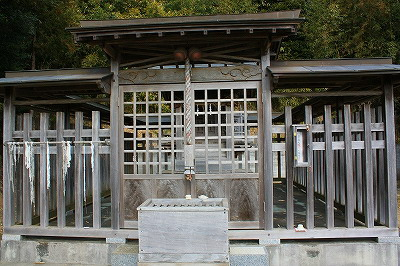

千葉県のとある田舎町にある地味〜な神社。
由緒によれば嘉永2（1849）年、この地に住む八角茂兵衛という人が手の病にかかり茨城県にある手接神社を３度参拝したところ全快したそうな。その御礼に石祀を建立し、その後、明治になって社殿が整備されたという。
尚、現在の社殿は平成１１年に建てられたものだ。
その本殿はこじんまりしたもので、周りを玉垣に囲われている。

見れば玉垣に棒がわたされ、そこに糸がぶら下がっている。
何じゃこりゃ？
以前、他所で赤い刺繍糸が社殿の軒下に大量にぶら下がっているのを見たことがある。
↓コレね
そのときは赤い糸＝縁結びと単純に解釈したのだが、白い糸ともなるとハナシは変わってくる。裁縫の腕が向上する祈願とか、がんじがらめに縛られたい祈願とか、逆にがんじがらめに絡み合った債務の整理祈願とか…
しかも良く見ると黒い糸や針金まで混ざっていて混乱に拍車がかかり放題かかりまくり。
下には巻かれた糸が置かれていた。うむー。
さて。
ここまでは前説。ここからが本題です（長いねー）。
本殿の裏手に地味〜な石祠がある。これが茂兵衛が建てた石祠なのかも。確認すれば良かった…
近づいてみると…
てっ！手だぁ〜！
地味な雰囲気からのネガポジ逆転カウンターパンチにいきなりノックダウン状態。
だって手ですよ、手。いきなり。夜見たら腰抜かしますって。
石で出来た手型。そのほとんどは
合掌した丸彫りである。
手のシワまでリアルに刻んであるものから小学生の図画工作で作ったレベルのものまで彫刻としての出来の差はあれどコレだけの数が揃うと
思わず後ずさりしてしまうほどの迫力がある。
この神社が手の神様であることから病気平癒を祈願して奉納されたということは想像に難くない。
手型に混じって足型があるのは、多くの神社仏閣が足と手、両方の悩みを受け付けている影響と思われる。
一般的に奉納される手型というのは木で作られたものが多いが、オール石というのはかなり珍しいのでは。
|
|
 |
| 熊本県足手荒神 |
|
福岡県足手観音 |
手は足に比べて
仕草が表現できるため意味性が強い。
ここに奉納されているのも単に手をかたどっただけではなく「合掌した」手型だ。
単なる手の病を治して欲しい願望と同時に信仰心も表明されている、という塩梅だ。

ちなみに最近奉納されたばかりのピッカピカの手型は見当たらなかった。
足腰の神様とか目の神様とかって盛んな寺社が多いが、手の悩みは現代の医学で対処できるケースが多いのだろうか。
↑このような手型を見ると栃木の大手神社の絵馬を思い出す。
↓コレね
やっぱり足より手の方が生々しいですな〜。
情報提供はマーブルさんです